CHANDEESHWAR
According to Kashi Khand, Chapter 73, Lord Shiva was describing importance and divine powers of various Shiv Lings. Inter alia, he narrated the Shiv Lings in sets of fourteen each.
Among the second set of fourteen Lings, Chandeeshwar is the eleventh Ling. Lord Shiva has given the importance of worshipping these Lings in detail.
A person who worships Chandeeshwar among the above fourteen Lings will not have rebirth. These Lings are invaluable treasures. Let alone worshipping, if a person with all divinity takes the names of these Lings including Chandeeshwar, he will be saved from all sorts of dangers and worries.
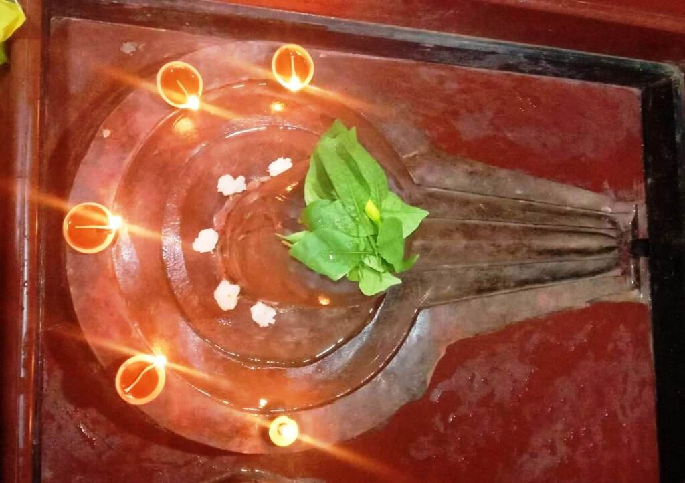
(CHANDEESHWAR)
Lord Shiva further stated that he will always be present in Chandeeshwar Ling and those who worship this deity will attain Mukti. A devotee who comes to Avimukta Kshetra (core area of Kashi) and worships Chandeeshwar will definitely attain Moksha and there is no doubt about it.
Learned Pundits believe that if a lamp is lit in front of Chandeeshwar with all divinity, in rememberance of any departed soul, within 13 days of the death, the departed soul will get liberated (Moksha) and reach the abode of Lord. This lamp is called as Moksha Deepam or Mukti Deep.
——————————————————————————————————-
Kashi Khand, Chapter 69, Shlok 57
क्षेत्रऽत्र सिद्धिदे प्राप्तश्चन्डीशो मरुजाङ्गलात्
प्रचण्डपापसन्घातं खण्डयेच्छतधेक्षनात्
From Marujangal Teerth, Chandeeshwar ling has come to this (Kashi) region-which is capable of giving divine powers to devotees. By worshipping Chandeeshwar Ling, the entire group of sins of the devotees are blown to hundreds of pieces.
———————————————————————————————————
LOCATION OF CHANDEESHWAR
Chandeeshwar is located at Sadar Bazar. In the Cantonment area, if a devotee proceeds to the road where various posh hotels are located, he will come across Radisson, Ideal Towers, Hotel Clarks etc. and JHV Mall. If he proceeds further on the road (known as Cariappa Marg), he will come across a turning to the right where there is an indicator reading “Shakti Marg”. The devotee should take a right turn and Chandeeshwar, a stand alone temple, is located opposite Chandi Devi temple.
Please watch our YouTube Video about Chadeeshwar at following Link
https://www.youtube.com/watch?v=enf8IFQT_u4&t=5s
TYPES OF POOJA
This place of worship is open practically throughout the day and devotees can perform pooja as per their convenience.
CHANDRESHWAR
According to Kashi Khand this Ling was installed by Chandra (Moon) for worshipping Lord Shiva. Chandra also dug one Koop (Well) which is known as Chandra Koop. Chandreshwar Ling is one of the Navgraha Shiv Lings and people who undertake Navagraha Yatras perform pooja of Chandreshwar Ling.
After installing this Ling, Chandra undertook rigorous intense penance (Tapas) to propitiate Lord Shiva. This went on for several years after which Lord Shiva appeared in person and blessed Chandra. Lord Shiva stated that the place where the Ling was installed is a Shakti Peeth (seat of vital energy). A person who performs pooja and archana at Chandreshwar Ling on Poornima days (Full Moon) will attain highest level of prosperity and happiness.
——————————————————————————————————-
Kashi Khand, Chapter 14, Shlok 44
जप होम अर्चन ध्यान दान ब्राहमण भोजनम्
महापूजा च सा नूनं मम प्रीत्यै भविष्यति
(Lord Shiva says to Lord Chandra), Therefore, the sacred rituals performed here (near Chandreshwar) on full moon day like Japa, Homa, Archana, Meditation, Charity and feeding the Brahmins (in big scale or small scale), will indeed be great worship and pleasing to me.
———————————————————————————————————
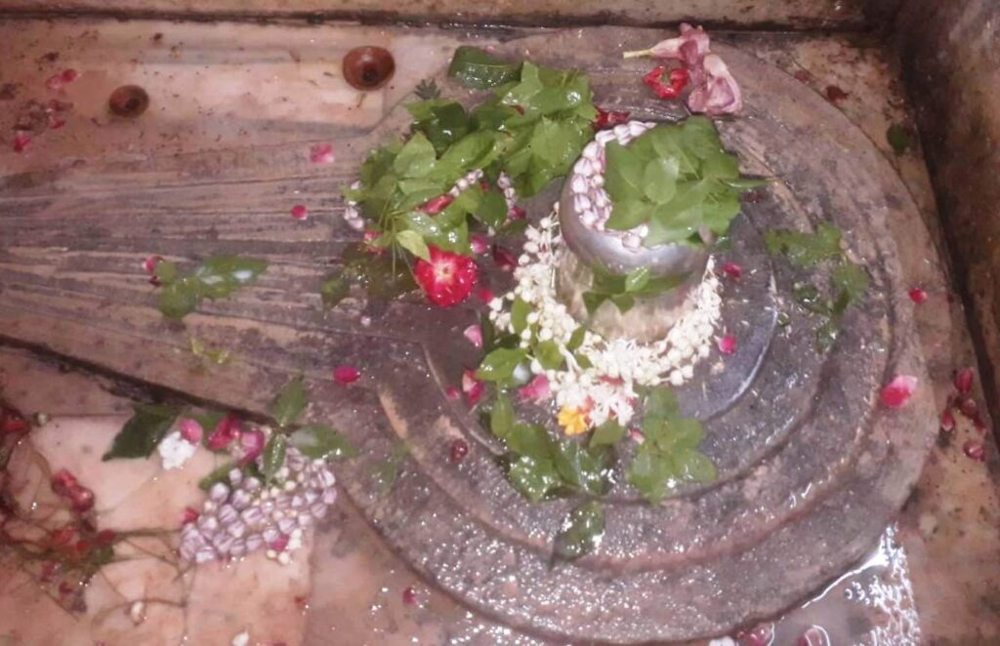
(CHANRESHWAR)
Lord Shiva also attached special importance to Amavasya which falls on Mondays (Somvati Amavasya). Devotees should perform Pooja of Chandreshwar on Triodasi (two days before the Amavasya), observe fast on Chaturdasi (one day before Amavasya). Finally on Somvati Amavasya, the devotees should take bath in Chandra Koop, perform Shraaddh Karma for their forefathers. This will give them ultimate happiness and the blessings of their forefathers.
If for some reason, the rituals for forefathers cannot be performed, devotee should at least touch the water of Chandra Koop. Again, if for some reason, the devotee is not able to touch the water of Chandra Koop, he should at least see it so as to get the benefits prescribed in the above paragraph.
After performing the pooja etc. as mentioned above, devotees should perform Annadan (Offering of food) to Sanyasis (Saints) etc. On poornima days in the month of Chaitra (March – April), if the Star Chitra coincides, they should undertake the above poojas etc. of Chandreshwar. Even if a staunch devotee of Chandreshwar, dies in any place other than Kashi, he is certain to reach heaven. (Kashi Khand, Chapter 14). Worshipping Chandreshwar Ling gives mental peace and clarity in thoughts. Those who have afflictions in their horoscope on account of adverse planetary position of moon, perform special poojas at Chandreshwar temple for remedy.
——————————————————————————————————-
Kashi Khand, Chapter 14, Shlok 62
चन्द्रेश्वरं समभ्यर्च्य यध्यन्यत्राऽपि संस्थित:
अघौघपटलीं भित्त्वा सोमलोकमवाप्स्यति
After worshiping Chandreshwar Ling, if a person dies elsewhere, he breaks the barrier of sins and reaches Chandralok.
———————————————————————————————————
Please watch our YouTube Video about Chandreshwar at following Link
https://www.youtube.com/watch?v=15x9DZdnTno
TYPES OF POOJAS
The temple is open from 06.00 a.m to 9.00 p.m. Aarties are performed at 10.00 a.m. and 09.00 p.m. While regular poojas are conducted by the Priest, Special poojas are performed on important days like Shivratri and certain Ekadasi days.
LOCATION OF THE TEMPLE
The temple is located at House No. Ck.7/124, Siddheshwari, Chowk Varanasi. One can travel upto Chowk by Cycle Rickshaw and walk to this place. Siddheshwari temple is an important landmark. Alternatively, devotees can approach the place by boat upto Scindia Ghat and climb up the steps.
LOCATION OF SIDDHESHWARI TEMPLE AS PER GOOGLE MAPS IS GIVEN BELOW. CHANDRESHWAR AND CHANDRA KOOP ARE INSIDE SIDDHESHWARI TEMPLE.
CHATUR MUKHESHWAR
On an humble request by Goddess Parvaty, Lord Shiva described the various Teerths (Sacred Ponds) and Shiv Lings in the Holy City of Kashi.
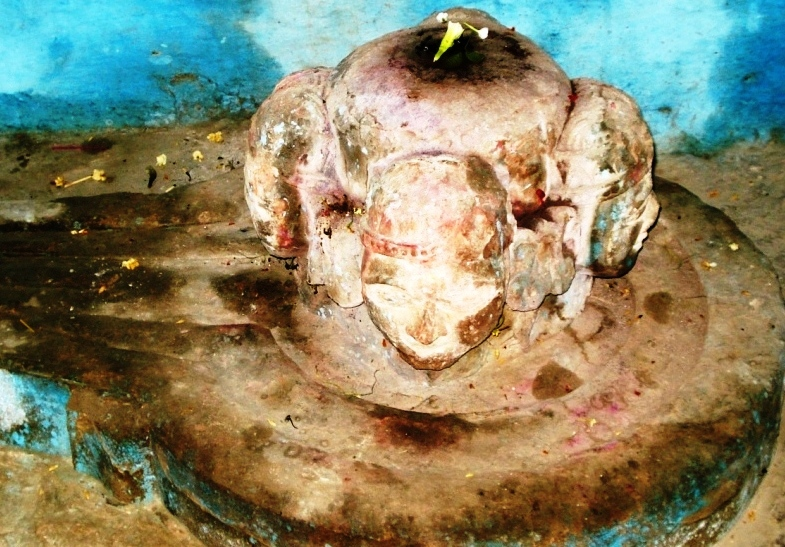
(CHATUR MUKHESHWAR)
In front of Varuna Sangameshwar, devotees can find Chatur Mukheshwar Ling, which has been installed by Lord Chatur Mukha Brahma.
A devotee who worships this Ling, which is also referred to as Chatur Mukha Prayageshwar (Kashi Khand, Chapter 97) will attain Brahma Lok.
——————————————————————————————————-
Kashi Khand, Chapter 55, Shlok 10
भक्ताश्चतुर्मुखेशस्य चतुरान्नवद्दिवि
पूज्यन्ते सुरसंघातै: सर्वभोगसमन्विता:
The devotees of this Chaturmukheshwar Linga are blessed with all the pleasures in heaven and are worshipped by all the gods as if the devotee is Lord Brahma himself.
———————————————————————————————————
LOCATION OF CHATUR MUKHESHWAR
Chatur Mukheshwar (also known as Prayag Ling) is located in front of Varuna Sangameshwar Ling at Adi Keshav temple, located at A-37/51, Rajghat Fort. Devotees can travel upto this place by autorickshaw or cycle rickshaw or car.
Location of Adi Keshav Temple as per Google Map is given below :
Please watch our YouTube Video about Chatur Mukheshwar at following Link
https://www.youtube.com/watch?v=enf8IFQT_u4&t=5s
TYPES OF POOJA
The place of worship is open from 06.00 a.m. to 12.00 Noon and from 04.00 p.m. to 10.00 p.m. The timings may be flexible.
CHITRANGADESHWAR
Kashi Khand has attached much importance to Kedareshwar Ling. (Please refer to Kedareshwar temple). According to Kashi Khand, Chapter 77, towards the north of Kedareshwar is Chitrangadeshwar Ling.
Devotees who worship Chitrangadeshwar will enjoy their daily life in heaven. In other words, they will reach heaven after death, which is for sure.
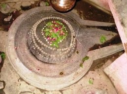
(CHITRANGADESHWAR)
According to old timers, this is a powerful Ling and devotees will find happiness and joy in their life.
LOCATION OF CHITRANGADESHWAR
Chitrangadeshwar is located adjacent to B-14/118, near Kedar Ghat Post Office, Kedar Ghat, Varanasi. Devotees can reach Kedareshwar temple by rickshaw and proceed on foot towards Kedar Ghat Post Office. This temple falls on the left side just before the clinic of Dr. R.C. Kowdi.
The temple houses one Devi, known as Chitragreeva Devi which finds mention in Kashi Khand, Chapter 70.
TYPES OF POOJA
The place of worship is open throughout and devotees can perform self pooja.
DAKSHESHWAR
Lord Shiva was narrating various sacred Teerths (Ponds), Koop (Wells) and places of worship in Kashi. Lord Shiva described such places with pleasure (Kashi Khand, Chapter 97).
In the vicinity of Mrityunjeshwar is the Daksheshwar Ling. By worshipping this Ling, the devotee is cleansed of all sins committed by him knowingly or unknowingly. In the vicinity of the Ling is Kalodak Koop (Well). The water from the well is capable of curing all diseases.
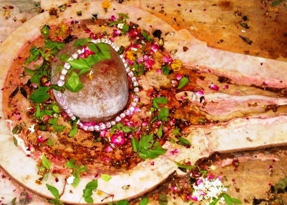
(DAKSHESHWAR)
LOCATION OF DAKSHESHWAR
Daksheshwar is located at K-52/39, Mrityunjay Mahadev temple premises. People can approach this temple by rickshaw through Bisheshwarganj/GPO.
TYPES OF POOJA
The temple is open from 04.00 a.m. to 12.00 midnight for worship. People can perform pooja as per their convenience with sacred Ganges water and flowers etc.
DANDAPANI
Long time back, there was a Yaksh named Ratnabhadra who had a son named Poornabhadra. After the death of Ratnabhadra, Poornabhadra started leading a comfortable life, but he had no issue, so he longed for children.
He expressed his desire to his wife, Kanaka Kundala, who in turn, asked him to worship Lord Shiva in Kashi. Poornabhadra did as he was asked by his wife. He worshipped Lord Shiva by means of singing Bhajans and very soon his wife delivered a beautiful boy who was named Harikesh.
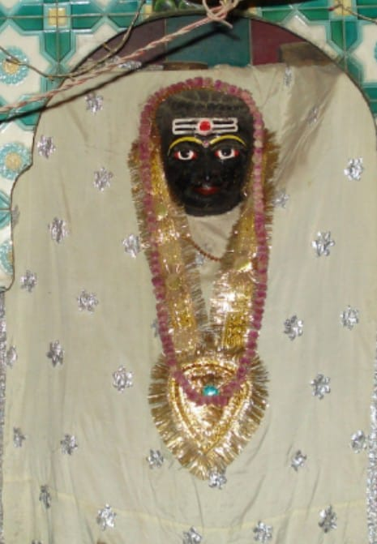
(DANDAPANI)
In due course, Harikesh became eight years old and developed a religious proclivity (natural inclination or disposition) of mind. He also started worshipping Lord Shiva by making clay Shiv Lings. He used to address his friends by various names of Lord Shiva like Chandrashekhar, Mrityunjay, Trilochan, Neelkant, etc. He used to visit various Shiva Temples without fail.
His father Poornabhadra was a little upset because Harikesh had become religious very early in his life. He asked Harikesh to be involved in household activities but the boy would not listen. Without telling his parents, one fine morning Harikesh left his home and started wandering aimlessly. He remembered an incident sometime back, when a Sage had told his father; if a person does not have any proper destination, Varanasi (Kashi) is the best place for him.
Harikesh soon arrived in Kashi and started worshipping Lord Visweshwar (Shiva). Lord Shiva and Goddess Parvaty were in Anandavan (Kashi) and Lord Shiva was describing the various aspects of Kashi. In the process, he stated that those who live in Kashi will be happy and those who die in Kashi will have no rebirth. They are indeed praiseworthy. (Kashi Khand, Chapter 32 has amply described the beauty of Kashi as narrated by Lord Shiva to Goddess Parvaty).
While all these discussions were going on, Lord Shiva saw Harikesh whose body had gone completely lean. He was emaciated and his body resembled a skeleton. Goddess Parvaty was moved by the boy’s intense worship of Lord Shiva and she asked Lord to bless the boy suitably. Accordingly Lord Shiva approached the boy and gently touched him. The boy was immensely pleased on seeing the Lord shining like one crore Suryas. He started singing praises of Lord Shiva.
Lord Shiva blessed the boy, stating that he will remain in Kashi as a saviour of votaries of Lord Shiva. He will protect the holy place from the evil forces and drive them away by his powers. Lord Shiva also ordained that two of his Shiv Gans named Samparam and Utparam would always be present with the Yaksh (Harikesh). Lord Shiva addressed Harikesh as Yaksh Raj (King of Yaksh) and granted that those who do not worship the latter would not get the benefit of Mukti in Kashi. Harikesh was also given the title of Dandapani (the one with the staff in his hand).
Lord Shiva further stated that devotees who take bath in Gyan Vapi Teerth and after performing rituals for their forefathers, worship Dandapani will become very fortunate and receive his (Lord Shiva’s) blessings. Kashi Khand states that Dandapani will stand or remain towards the south of Lord Visweshwar and will expel all wicked persons and admit only virtuous people for worshipping Lord Shiva in Kashi.
Those who worship Dandapani in Kashi will find that all their obstacles in life are removed and they will be quite happy in life. They are sure to attain Mukti.
LOCATION OF DANDAPANI
Dandapani is located at Ck.36/10, Dhundhiraj Galli, Bazar behind Gyan Vapi. Devotees can travel upto Gyan Vapi (Near Chowk) by rickshaw, take a right turn, climb down the steps and again take a right turn. (If a devotee proceeds diagonally towards left, he will enter the Gyan Vapi area). After walking a few yards, the devotee will come to Markandeyshwar on the right side and immediately thereafter he will find Dandapani. For ready reference, Jalans (textile merchants) have a portion of their shop nearby.
One thing is worth mentioning here that this Dandapani should not be confused with another Dandapani temple which is in the proximity of Kaal Bhairav temple.
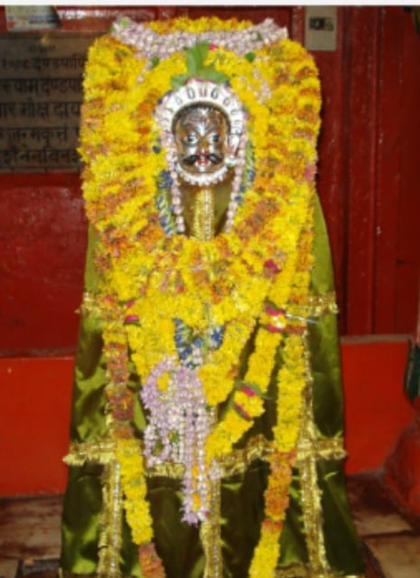
(DANDAPANI BHAIRAV)
TYPES OF POOJA
The place of worship is open practically throughout and devotees can have darshan through grilled doors.
DASASWAMEDHESHWAR
Lord Shiva sent Lord Brahma to Kashi to create disturbance in the Kingdom to make King Divodas leave the Holy City. (For details kindly refer to Divodaseshwar). Lord Brahma assumed the guise of an old Brahmin and visited King Divodas. He was welcomed with honour by King Divodas, who asked the guest (Lord Brahma) as to what can be done for his comfort. The old Brahmin said he desired to perform Aswa Medha Yagna and requested the King to provide all the materials and arrangements. Lord Brahma, with the help of King Divodas, performed not just one but ten Aswa Medha Yagnas. The place where he performed these Yagnas is known as Dasaswamedh Teerth (now known as Dasaswamedh Ghat). Prior to that the place was known as Rudra Sarovar.
Subsequently, Lord Brahma installed a Ling called Dasaswamedheshwar and decided to stay in Kashi. Lord Brahma could not find any fault with King Divodas and could not think of anything to report to Lord Shiva.
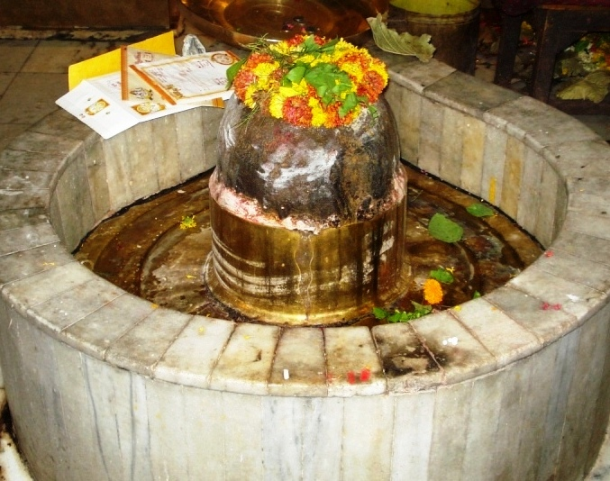
(DASASWAMEDHESHWAR)
According to Kashi Khand (Chapter 52), a devotee who takes bath at Dasaswamedh Ghat and worships Dasaswamedheshwar, is cleansed of all his sins. A person who does the above act of worship on the 1st day after Amavasya in the month of Ashad will attain punya of the highest order and all his sins accumulated over two generations will be washed away.
A devotee should take bath from the first day to tenth day after Amavasya every month in Dasaswamedh Ghat and worship Dasaswamedheshwar and he will always remain happy and there will be no rebirth for him. More importance is attached to the ten days as above in Jyeshta month (June 22-July 21).
LOCATION OF DASASWAMEDHESHWAR
Dasaswamedheshwar Ling is located at Dasaswamedh Ghat inside Shitla Mandir, at D-18/19. Devotees can travel upto this place by rickshaw. Alternatively, they can travel upto Dasaswamedh Ghat by boat and climb the steps.
Location of Dasasmedheshwar Ling (Shitla Mandr) as per Google Map is given in the following Link :
Please watch our YouTube Video about Dasaswamedheshwar at following Link
https://www.youtube.com/watch?v=6zhg8dmD8V8&t=4s
TYPES OF POOJA
The temple remains open practically throughout the day. Aarties are conducted in the morning and evening.
DHANVANTARESHWAR
Lord Shiva was relating the various sacred Teerths (Ponds), Koop (Wells) and places of worship in Kashi. Lord Shiva described such places with blissful joy (Kashi Khand, Chapter 97).
In the vicinity of Malteeshwar is the Dhanvantareshwar Ling. By worshipping this Ling, the devotee is cleansed of all sins committed by him and the devotee is cured of his diseases. Kashi Khand mentions one Dhanvantareshwar Koop (Well) where Dhanvantari (celestial physician) had dropped various medicines/drugs like Mrit Sanjivini, the elixir which revives the dead ones. The Koop is presently not visible. However, in the near vicinity is Kalodak Koop (Well). The water from the well is capable of curing all diseases. Old timers believe that Dhanvantareshwar Koop has merged itself with Kalodak Koop.
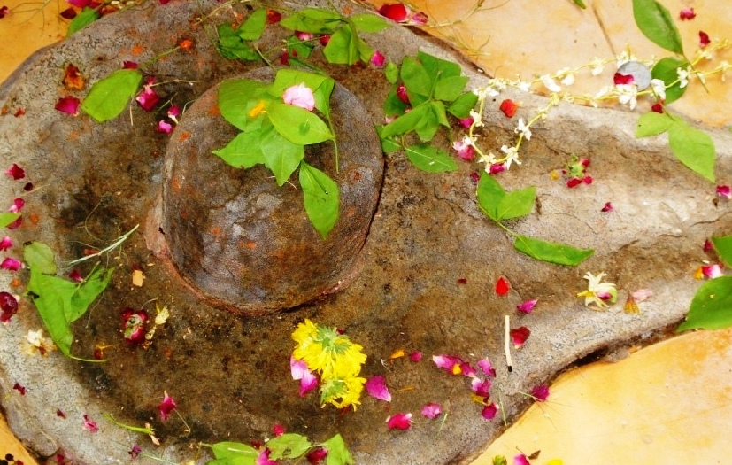
(DHANVANTARESHWAR)
——————————————————————————————————-
Kashi Khand, Chapter 97, Shlok 127
तत्र कूपे तु यद्दत्तं दानं शिवरतात्मनाम्
संवर्तेऽपि न तस्याऽस्ति नाश: कलशसम्भव
Whatever is donated to the Shiva devotees in the vicinity (Kalodak) well, the punya benefits will not be destroyed even in the time of deluge (Maha Pralay).
———————————————————————————————————
LOCATION OF DHANVANTARESHWAR
Dhanvantareshwar is located at K-52/39, in the premises of Mrityunay Mahadev temple. People can approach this temple by rickshaw through Bisheshwarganj/GPO.
LOCATION OF MRITYUNJAY MAHADEV TEMPLE AS PER GOOGLE MAPS IS GIVEN BELOW
TYPES OF POOJA
The temple is open from 04.00 a.m. to 11.00 p.m. for worship. People can perform pooja as per their convenience with sacred Ganges water and flowers etc.
DHRUVESHWAR
Once a small Kingdom was ruled by a King named Uttanapad, who had two wives namely Suruchi and Suniti. Suruchi had a son named Uttam and Suniti had a son named Dhruv.
Once when the King was sitting in the official Darbar, Uttam came up fully dressed and sat on the lap of his father, the King. Dhruv too proceeded to sit on the King’s lap but was forcibly prevented by Suruchi, who scolded him using derogatory words. The King did nothing to intervene and Dhruv went away to his residence, deeply dejected.
Dhruv’s mother Suniti saw tears in Dhruv’s eyes and soon came to know about the happening in the Darbar. Dhruv wanted to know from his mother, while both Suniti and Suruchi were the wives of the King, why he was being discriminated and ill treated and supposed as inferior to his step brother Uttam.
With utter dismay, Suniti told Dhruv that Suruchi must have performed all benevolent acts in her previous life. All persons ought to do good deeds like philanthropy, display of respect to elders, proper studies, showing respect to guests, worshipping God, listening to and perusal of various Purans, proper behaviour towards friends and persons equal to their parents. Those who undertake such good deeds are blessed in their next birth. The good exalted positions and comforts enjoyed by them in their present life are certainly the result of good deeds performed in the previous birth.
Suniti also told that Suruchi was the principal queen and all the other queens played second fiddle to her. Therefore, she must have priority over other queens in all respects.
Dhruv sought permission from his mother for undertaking penance and intense prayers to the Lord. Though the boy was too young and tender for such ordeal, yet Suniti gave him permission to follow the path of worship. Dhruv left his home and wandered through the forests in search of a suitable and proper place to carry out his prayers and penance.
He was deeply engrossed in thoughts with his eyes closed and when he opened his eyes, he saw seven great Sages passing by. Dhruv immediately prostrated before the great Sages and told them his plight. He expressed his desire to undertake intense penance to the Lord almighty. Dhruv further told that he would like his step brother to be the heir apparent and become the King in due course. Besides, Dhruv had no intention of enjoying something which he had not earned rightfully. He wanted to become an altruist (one who shows unselfish regard for the interest of others) and achieve something in life. He earnestly requested the great Sages to show him the right path.
All the seven Sages were unanimous in their advice. One by one they asked Dhruv to worship Lord Vishnu, in the process describing Lord Vishnu in his various forms. Further, they also advised the mode and manner in which Dhruv should worship Lord Vishnu. They also taught him some Mantras to chant regularly in praise of Lord Vishnu. After giving all good advices to Dhruv, the great Sages departed.
Dhruv reached the banks of Yamuna and started intensely praying Lord Vishnu by chanting the various Mantras as advised by the Sages. His prayers were so intense that many Devas like Lord Indra felt petrified. They tried to disturb Dhruv in his prayers but could not succeed. Kashi Khand, Chapter 20, has described in detail the type of prayers undertaken by Dhruv and various methods of interruptions adopted by the Devas.
The Devas alongwith Lord Indra approached Lord Brahma and narrated the intense penance and austerity undertaken by Dhruv and expressed their fear that their own position was in jeopardy (danger). Lord Brahma assured the Devas and assuaged their apprehension by telling that Dhruv would not do anything detrimental to their interest and advised them not to lose their composure.
However, Lord Vishnu soon realized the sincerity of the penance undertaken by Dhruv and appeared before him. On seeing the Lord in person, Dhruv was overwhelmed with ecstasy and started weeping. He started singing various mantras in praise of Lord Vishnu. Lord Vishnu was very pleased and he granted that Dhruv’s mother would always remain with him.
Lord Vishnu told that he was on the way to Kashi, the abode of Lord Shiva. Lord Vishnu showered encomiums (high praises) on Kashi Kshetra and Lord Visweshwar who blesses all the denizens of Kashi. Lord Vishnu made Dhruv sit on Garuda and took him to Kashi. The day was Poornima of Kartik month. On the way, Lord Vishnu stated that a person who takes bath in river Ganga on the Shukla Chaturtasi day of Kartik month and worships Visweshwar is blessed with Moksha.
After reaching Kashi, Lord Vishnu advised Dhruv to install a Shiv Ling in Kashi and worship Lord Shiva. According to Lord Vishnu, if a person installs one Shiv Ling in Kashi it is equivalent to installing one million Shiv Lings in other places. Further, if a person constructs or renovates a temple in Kashi, he will get the punya equivalent to giving entire Sumeru Mountain in Daan (offering). After giving all such good advices to Dhruv, Lord Vishnu disappeared.
Very religiously, Dhruv dug a Kund, installed a Shiv Ling, constructed a temple and started praying Lord Shiva. Soon thereafter he left for his home.
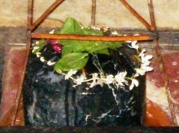
(DHRUVESHWAR)
According to Kashi Khand, a devotee who worships Dhruveshwar will attain all happiness in life and reach Dhruv Lok (heaven) after death. Further, prosperity will never leave the devotee. Kashi Khand has described the events related to Dhruv in detail in chapters nineteen to twenty one. Kashi Khand also states that those who read and listen to the story of Dhruv will be absolved of all their sins and will reach the abode of Lord Vishnu after death.
LOCATION OF DHRUVESHWAR
Dhruveshwar is located in the premises of Sanatan Dharm College, Nai Sarak, Varanasi. This is a famous locality and devotees can reach this place by rickshaw/auto.
TYPES OF POOJA
The temple remains open from 06.00 a.m. to 10.00 a.m. and 06.00 p.m. to 08.00 p.m. Our enquiries revealed that the timings are extremely flexible.
DIVODASESHWAR
Lord Shiva was in Mandarachal and Kashi was ruled by a very pious and religious King named Divodas. In his Kingdom every one was very happy and there was all round prosperity. He had reached an understanding with Lord Brahma that as long as he was ruling, Devas and other celestial beings should stay away from Kashi and should not create any disturbance in Kashi.
Lord Brahma more or less agreed to it but on one condition that King Divodas should prove to be an excellent administrator and all people living in Kashi and visiting Kashi should be treated well in their religious pursuits. The King agreed and accordingly gave excellent governance.
Lord Shiva was very upset at being away from Kashi for a long time and he wanted to make King Divodas commit some mistake. Accordingly, he sent sixty four Yoginis to create some disturbance, but they were enthralled by the beauty and serene surroundings of Kashi which appeared to be a part of heaven. They ultimately settled down there.
When the Yoginis failed to return, Lord Shiva sent Lord Surya with instructions to create some disturbance in Kashi so as to defeat King Divodas in his resolve. Lord Surya came to Kashi and disguised himself as an astrologer, a learned scholar, a religious propagator, a businessman, a brahmin etc. But he could not find any fault with any person in Kashi or the governance of King Divodas. Lord Surya was also very much attracted towards Kashi and the beauty of the city. Lord Surya thought, if he went back to Mandarachal without fulfilling the wishes of Lord Shiva, the latter would get angry. Lord Surya finally settled in Kashi.
Subsequently, Lord Shiva sent Lord Brahma to Kashi with the same purpose. Lord Brahma, disguised as an old Brahmin, visited King Divodas. He was welcomed with honour by King Divodas, who asked the guest (Lord Brahma) as to what could be done for his comfort. The old Brahmin said he desired to perform Aswa Medha Yagna and requested the King to provide all the materials and make arrangements. Lord Brahma, with the help of King Divodas, performed not just one but ten Aswa Medha Yagnas.
Lord Shiva then sent his Shiv Gans who also were enthralled by the beauty of Kashi and decided to stay there. Installing a Shiv Ling in Kashi is considered very auspicious and the Shiv Gans installed various Lings at several places in Kashi. These Shiv Lings came to be known after their names. (Kashi Khand, Chater 53).
Finally Lord Shiva summoned his son, Lord Ganesha (Vinayak) with the specific mission of creating disturbances in the governance of King Divodas.
Lord Vinayak reached Kashi and assumed the guise of an old astrologer. He made people dream of something and in the morning he met those people and narrated the effects of dreams. He also started interpreting the position of planets in various persons’ horoscopes. By such minatory predictions, he made several people leave Kashi.
In due course, he gained entry into the King’s palace and managed to win the confidence of the ladies thereat. As days went by he also impressed the Queen who told the King about the greatness of the old astrologer and suggested that the King should pay his respects to him. On getting his permission, the Queen sent for the old astrologer.
The King welcomed the astrologer with all humility and the latter blessed the King as per the usual practice. The King asked the astrologer to predict the future. The astrologer after deep thought, told various things about the King and the kingdom. He also stated that starting from that day, on the eighteenth day one Brahmin will come and give him (King) some serious advice which should be followed. After saying this the astrologer left the palace.
In some way or the other Vinayak fulfilled his father’s wishes and settled down in Kashi in various different places in different forms.
Finally Lord Vishnu was sent to Kashi where he approached King Divodas as a Brahmin on the eighteenth day. He was welcomed with all honour by the King and Lord Vishnu in the disguise of a Brahmin preached the King all the good things. The King stated that during his period of governance, the people of Kashi were extremely happy and that there was a sense of religious fervour all around.
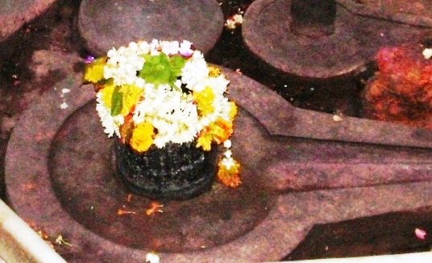
(DIVODASESHWAR)
King Divodas was advised by the Brahmin to install a Shiv Ling in Kashi, which is considered very auspicious. The Brahmin further advised that after installation of Shiv Ling, on the seventh day, a celestial plane would land from Heaven and take the King to Lord Shiva’s abode. King Divodas was very happy at hearing this. He gave the Kingdom to Rajkumar Samaranjayan, installed a Shiv Ling which came to be known as Divodaseshwer and started praying to Lord Shiva. At the pre-appointed day, the celestial plane landed on the earth, and the King was taken to Lord Shiva’s abode.
Those who worship Divodaseshwar will always be happy, they will be absolved of all their sins and they will be victorious in the battlefield. In the present day parlance, this may be taken as victorious in any competition.
LOCATION OF DIVODASESHWAR
Divodaseshwar Ling is located at D.2/13, Vishwa Bhuja Gauri, near Dharmeshwar/Vishalakshi Gauri. They can travel upto Dasaswamedh Vishwanath Gulli or Bansphatak Vishwanath Gulli by rickshaw and walk on foot to this place. Devotees generally combine prayers at this temple alongwith darshan of Visweshwar/ Annapurna temple.
TYPES OF POOJA
The place of worship is open practically through out and devotees can worship as per their convenience.